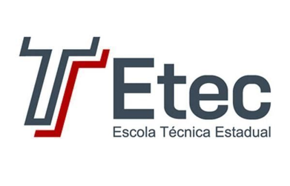

No segundo ano do curso técnico em Desenvolvimento de Sistemas integrado ao Ensino Médio na ETEC, a rotina ganha um nível mais elevado de complexidade e maturidade profissional. É o momento em que os conhecimentos teóricos e a lógica básica consolidados no primeiro ano se transformam em aplicações completas, integradas e alinhadas ao mercado de trabalho.
A rotina de estudos é marcada por uma forte integração entre as matérias técnicas:
Desenvolvimento de Sistemas & Análise e Projeto de Sistemas: O estudante deixa de criar apenas scripts simples e passa a aplicar o paradigma de Programação Orientada a Objetos (POO) com linguagens de alto nível (como Java ou C#). Em paralelo, a matéria de Análise e Projeto de Sistemas ensina a arquitetar esses softwares utilizando padrões de projeto, diagramas avançados da UML e mapeamento detalhado de requisitos para que a aplicação seja robusta e escalável.
Programação Web 2 & Banco de Dados 2: No desenvolvimento web, o aluno evolui do front-end básico para a criação de sistemas dinâmicos completando o fluxo Full Stack. Em Programação Web 2, aprende-se linguagens back-end (como PHP, Node.js ou C#) e integração com APIs. Tudo isso funciona em conjunto com Banco de Dados 2, onde o estudante domina junções complexas de tabelas (JOINs), procedimentos armazenados (Stored Procedures), gatilhos (Triggers) e a conexão direta do banco com as aplicações web e desktop.
Conduta Profissional e Responsabilidade Sócio-Organizacional: Essa disciplina traz a preparação comportamental necessária para a entrada no mercado de trabalho. Aborda ética profissional, legislação trabalhista, Direitos Humanos, sustentabilidade nas corporações e o desenvolvimento de soft skills, como comunicação em equipe, resolução de conflitos e postura em entrevistas de emprego e ambientes corporativos.
No segundo ano, a vivência de laboratório passa a simular o dia a dia real de uma empresa de tecnologia. O estudante aprende a trabalhar com sistemas dinâmicos interconectados — em que a tela web se comunica com o código back-end e persiste dados no banco —, construindo um portfólio cada vez mais completo e se preparando para os desafios de gestão e inovação do terceiro e último ano.
Próximo